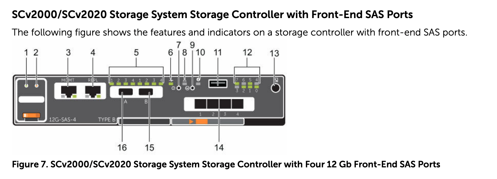
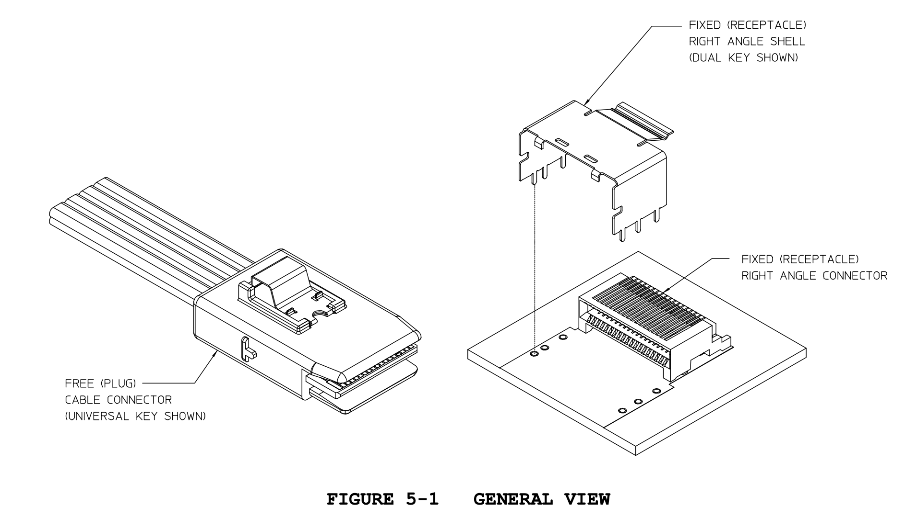
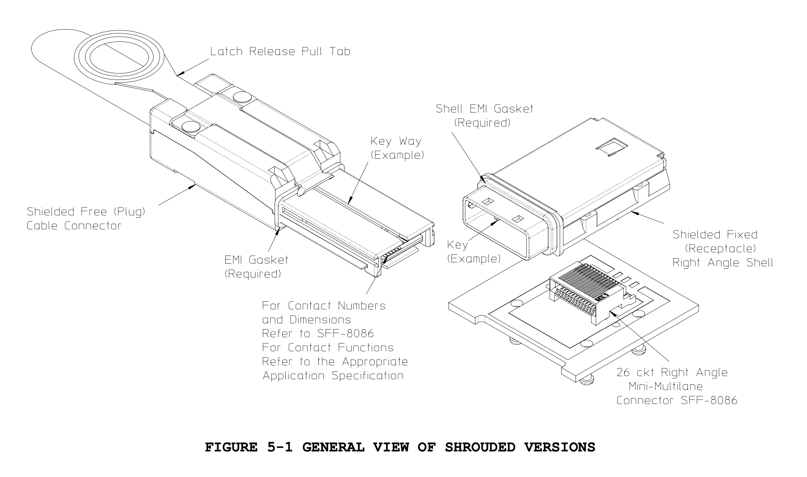
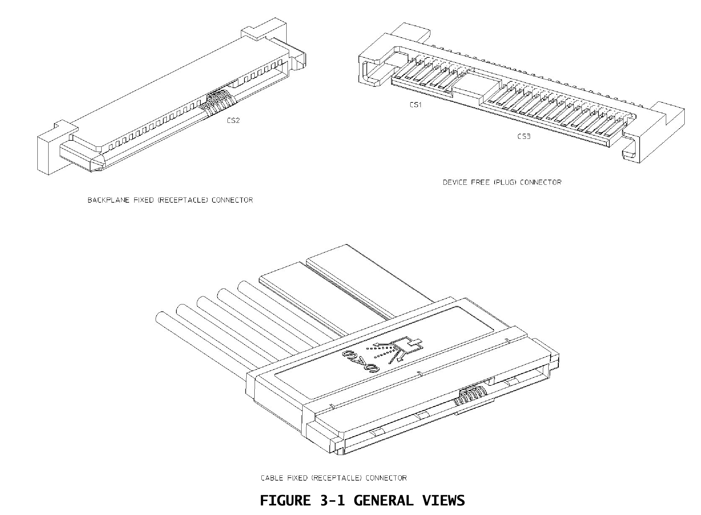
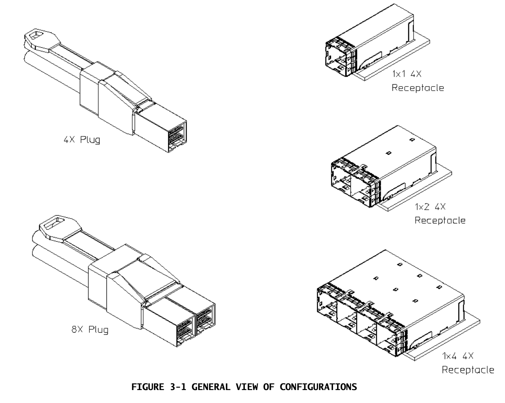
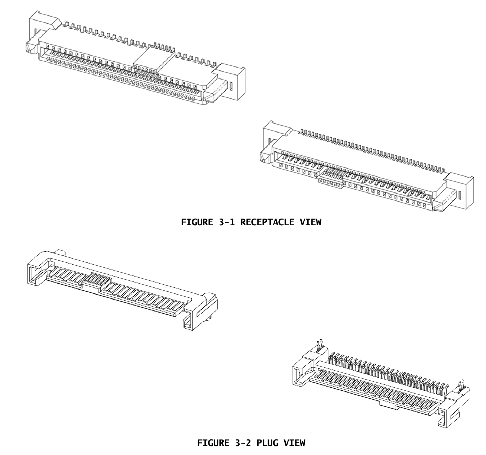
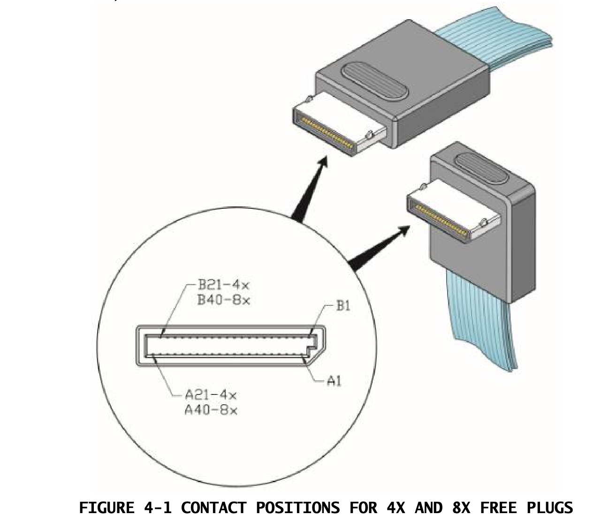

硬盘相关的概念¶
ATA¶
- ech IDENTIFY DEVICE: 获取设备信息
- 25h READ DMA EXT: 读取扇区
- 35h WRITE DMA EXT: 写入扇区
ATA 同时也是接口，图片如下。ATA 前身是 IDE，现在 ATA 叫做 PATA。

AHCI¶
AHCI 可以简单理解为 PCIe <-> SATA 的转换器。AHCI 暴露为一个 PCIe 设备：
$ lspci -vv
00:1f.2 SATA controller: Intel Corporation C600/X79 series chipset 6-Port SATA AHCI Controller (rev 05)
Kernel modules: ahci
处理器通过 IO port/MMIO 访问 AHCI，然后 AHCI HBA 连接到 SATA 设备。
SATA¶
SATA 一般说的是接口。它一般分为两个部分，数据和电源。数据部分只有 7 个 pin，三个 GND 和两对差分线（A+A- B+B-），图片如下：

电源部分有 15 个 pin，有 GND 3.3V 5V 和 12V，图片如下：

常见的 SATA 盘有 2.5 英寸（small form factor, SFF）和 3.5 英寸（large form factor，LFF）两种规格。
M.2¶
M.2 又称 NGFF，有不同的 key 类型。常见的是 B 和 M：
- B key: 12-19 notched, PCIe x2, SATA
- M key: 59-66 notched, PCIe x4, SATA
都有部分引脚的位置是空的：

在这里可以看到两种 key 的 pinout。
- B key: SATA pin B(41,43) A(47,49), PCIe x2 pin R1(29,31) T1(35,37) R0(41,43) T0(47,49), USB 3.0 pin TX(29, 31) RX(35,37)
- M key: SATA 同上，PCIe x4 pin R3(5,7) T3(11,13) R2(17,19) T2(23,25) Lane 0,1 同上
可以看到，SATA pin 和 PCIe 的两个 lane 在 B 和 M key 中是一样的，物理上也是可以兼容的。
因为支持 SATA 和 PCIe，就有下面三种可能的使用方式：
- PCIe -- AHCI HBA(Board) -- SATA(M.2) -- Disk: 传统方式，只不过物理接口从 SATA 变成了 M.2
- PCIe -- PCIe Device(M.2) -- Disk(AHCI)：硬盘实现了 AHCI 的接口，通过 PCIe 连接到 CPU
- PCIe -- PCIe Device(M.2) -- Disk(NVMe)：硬盘实现了 NVMe 的接口，通过 PCIe 连接到 CPU

SATA express¶
SATA express 在 SATA 3.2 引入，它用的很少，被 U.2 取代。提供了 PCIe x2 或者 SATA x2。
U.2¶
U.2 也叫 SFF-8639。它和 SATA express 接口一样，但提供了 PCIe x4 或者 SATA x2。详见 pinout。

速度比较¶
不同的协议的速度如下：
- SATA 3.0: 6Gb/s(8b/10b, 4Gb/s uncoded)
- SAS-1: 3Gb/s
- SAS-2: 6Gb/s
- SAS-3: 12Gb/s
- SAS-4: 22.5Gb/s
- PCIe 3.0 x4: 32Gb/s(8GT/s, 128b/130b, 31.5 Gb/s uncoded)
更完整的可以看List of interface bit rates。
Intel SSD DC P4618 Series 读写速度可以达到 40~50 Gb/s，它采用的是 PCIe 3.0 x8(64Gb/s) NVMe。
Intel SSD 545s Series 读写速度约 4Gb/s，采用的是 SATA 3.0 6Gb/s。
SAMSUNG 970 EVO 读写速度 20~30 Gb/s，它采用的是 PCIe 3.0 x4(32Gb/s) NVMe。
SAS¶
SAS 涉及的物理接口比较多，下面举一个具体的例子：DELL SCv2000
文档：https://dl.dell.com/topicspdf/storage-sc2000_owners-manual_en-us.pdf
它的背面：

它有四个前端接口 Mini-SAS High Density (HD)，即 SFF-8644；两个后端接口 Mini-SAS，即 SFF-8088。
RAID 卡例子：MegaRAID SAS 9361-8i
文档：https://docs.broadcom.com/doc/12351995
它的接口有：
- 两个 mini-SAS SFF-8643(Mini Multilane 4/8X 12 Gb/s Unshielded Connector (HD12un)) 内部连接器，连接到硬盘
- PCIe 3.0 8x 连接主板
SAS 标准：
- INCITS 417 Serial Attached SCSI 1.1 (SAS-1.1)
- INCITS 457 Serial Attached SCSI 2 (SAS-2)
- INCITS 478 Serial Attached SCSI 2.1 (SAS-2.1)
- INCITS 519 Serial Attached SCSI - 3 (SAS-3)
- INCITS 534 Serial Attached SCSI - 4 (SAS-4)
可以从 https://www.t10.org/drafts.htm#SCSI3_SAS 免费下载尚未成为标准的 SAS-4.1 Working Draft。
SAS 相关的物理接口¶
查找 SFF 标准：https://www.snia.org/technology-communities/sff/specifications
中文介绍：https://www.163.com/dy/article/H8TGPEUA0532B75P.html
SFF-8087¶
Mini Multilane 4X Unshielded Connector Shell and Plug

介绍：https://cs-electronics.com/sff-8087/
Mini SAS 4i 连接器就是 36 pin 的 SFF-8087，支持四路 SAS。i 表示用于 internal 连接。对应的 external 接口是 SFF-8088。
标准下载地址：https://members.snia.org/document/dl/25823
它的引脚定义可以在 SFF-9402 看到，它的引脚分为 A 面和 B 面，每面有 18 个 PIN，用途如下：
- A2(Rx0+), A3(Rx0-), B2(Tx0+), B3(Tx0-)：第一组差分对
- A4(Rx1+), A5(Rx1-), B4(Tx1+), B5(Tx1-)：第二组差分对
- A13(Rx2+), A14(Rx2-), B13(Tx2+), B14(Tx2-)：第三组差分对
- A16(Rx3+), A17(Rx3-), B16(Tx3+), B17(Tx3-)：第四组差分对
- B8(Sclock), B9(Sload), A10(SDataOut), A11(SDataIn)：SGPIO 协议
- B8(2W-CLK), B9(2W-DATA)：用于 SES 的 I2C 协议
这四组差分对对应四路 SAS 或者 SATA。SGPIO 协议的标准是 SFF-8485，主要用途是控制硬盘状态灯，以及判断盘是否插入。
相关标准：
- SFF-8086: Mini Multilane 10 Gb/s 4X Common Elements Connector
SFF-8088¶
Mini Multilane 4X Shielded Connector Shell and Plug

标准下载地址：https://members.snia.org/document/dl/25824
Mini SAS 4x 连接器就是 26 pin 的 SFF-8088，支持四路 SAS。用于 external 连接。对应的 internal 接口是 SFF-8087。
SFF-8482/SFF-8678/SFF-8680/SFF-8681¶
SFF-8482: Serial Attachment 2X Unshielded Connector (EIA-966)

介绍：https://cs-electronics.com/sff-8482/
支持两路 SAS，29 个引脚。和 SATA 的接口大小一样，目的是为了可以兼容 SATA 和 SAS 盘，比较常见。
标准下载地址：https://members.snia.org/document/dl/25920
不同速率的版本：
- SFF-8678: Serial Attachment 2X 6Gb/s Unshielded Connector
- SFF-8680: Serial Attachment 2X 12Gb/s Unshielded Connector, 支持 SAS-2.x 和 SAS-3
- SFF-8681: Serial Attachment 2X 24Gb/s Unshielded Connector, 支持 SAS-4
SFF-8614/8644¶
SFF-8614: Mini Multilane 4/8X Shielded Cage/Connector (HDsh)

标准下载地址：https://members.snia.org/document/dl/25939
对应的 internal 版本是 SFF-8643: Mini Multilane 4/8X 12 Gb/s Unshielded Connector
名称：External Mini-SAS HD(High Density)
升级版本：
SFF-8644: Mini Multilane 4/8X 12 Gb/s Shielded Cage/Connector (HD12sh)
标准下载地址：https://members.snia.org/document/dl/25952
支持 SAS-3 和 PCIe 3.0
SFF-8639¶
Multifunction 6X Unshielded Connector
又称 U.2

标准下载地址：https://members.snia.org/document/dl/26489
用途：
- Single port SATA (as defined by Serial ATA revision 3.1)
- Two port SATA Express (as defined in Serial ATA Technical Proposal #TPR_C109, currently under development)
- Dual port SAS (as defined by SFF-8482)
- MultiLink SAS (as defined by SFF-8630)
- Up to 4 lanes of PCIe (as defined in this specification)
SFF-8611¶
MiniLink 4/8X I/O Cable Assemblies
又称 OCuLink 1.0

标准下载地址：https://members.snia.org/document/dl/27937
用途：
- PCIe
- SAS
硬盘性能指标¶
硬盘性能一般会看如下几个指标：
- 顺序读写性能，在指定的 block size 下，顺序读写的传输速度，单位通常是 MB/s
- 随机读写性能，在指定的 block size 下（一般是 4KB），随机地址读写的每秒读写操作次数，单位通常是 IOPS
- 延迟
CrystalDiskInfo 术语：
- SEQ1MQ8T1：顺序读写（SEQ），一次读写 1 MB（1M），队列深度是 8（Q8），单线程（T1）
- SEQ128KQ32T1：顺序读写（SEQ），一次读写 128 KB（128K），队列深度是 32（Q32），单线程（T1）
- RND4KQ32T16：随机读写（RND），一次读写 4KB（4K），队列深度是 32（Q32），16 线程（T16）
- RND4KQ1T1：随机读写（RND），一次读写 4KB（4K），队列深度是 1（Q1），单线程（T1）
根据 SSD vs HDD - Should You Buy a Solid State Drive or Hard Disk Drive?，SSD 和 HDD 在顺序读写性能上的常见范围：
- SSD: 300 ~ 500 MB/s
- HDD: 100 ~ 160 MB/s
SSD 和 HDD 在随机读写性能上的常见范围：
- SSD: 20,000 ~ 100,000 IOPS
- HDD: 75 ~ 100 IOPS
可以看到，SSD 和 HDD 相比，顺序读写性能高，随机读写性能显著高。但实际上，这个数据有些过时了。
下面看一些具体的例子：
- HDD TOSHIBA AL15SEB120N: 顺序读写性能 234.0 MB/s，延迟 2.86ms
- HDD SEAGATE ST10000NM0096: 顺序读写性能 254 MB/s，随机读 170 IOPS，随机写 370 IOPS，延迟 4.16ms
- SSD Ultrastar DC SS200: 顺序读 1,800 MB/s，顺序写 1,000 MB/s，随机读 250,000 IOPS，随机写 86,000 IOPS，延迟 100us
- SSD KIOXIA EXCERIA PRO NVMe SSD: 顺序读 7,300 MB/s，顺序写 6,400 MB/s，随机读 800,000 IOPS，随机写 1,300,000 IOPS
- SSD SAMSUNG PM9A1: 顺序读 7,000 MB/s，顺序写 5,200 MB/s，随机读 1,000,000 IOPS，随机写 850,000 IOPS